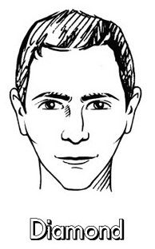
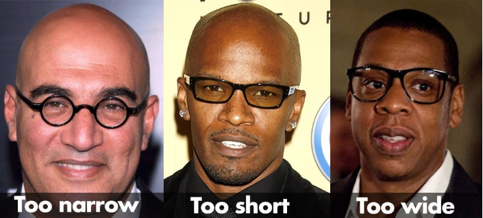

Diamond Face Features
Diamond faces have balanced proportions. They are aboit longer than the are wide and have strong, sharp tapering jaws and foreheads with the cheekbones being most prominent.

Best Sunglasses Styles
Almost any style works! But beware you can manipulate your visual perception alot more with the glasses you chose with this face shape.

Why They Suit Diamond Faces
Softer round glasses and more square angular glasses work but each give a different perception, angular give a stronger look, and rounder glasses give a softer less aggressive look.